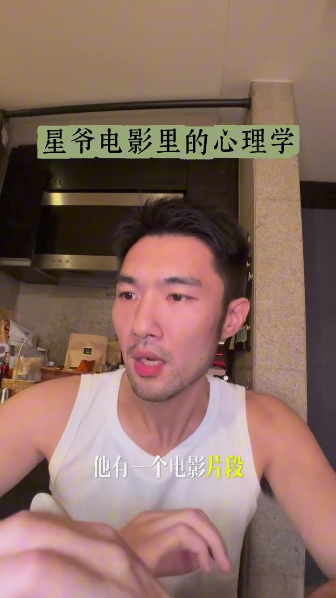
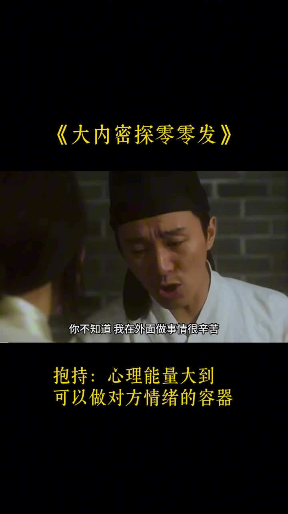
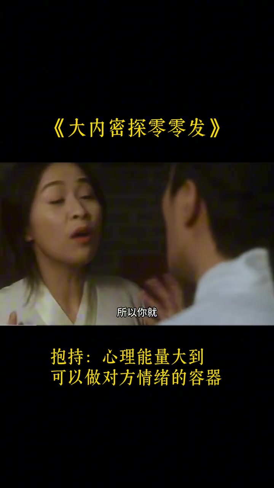
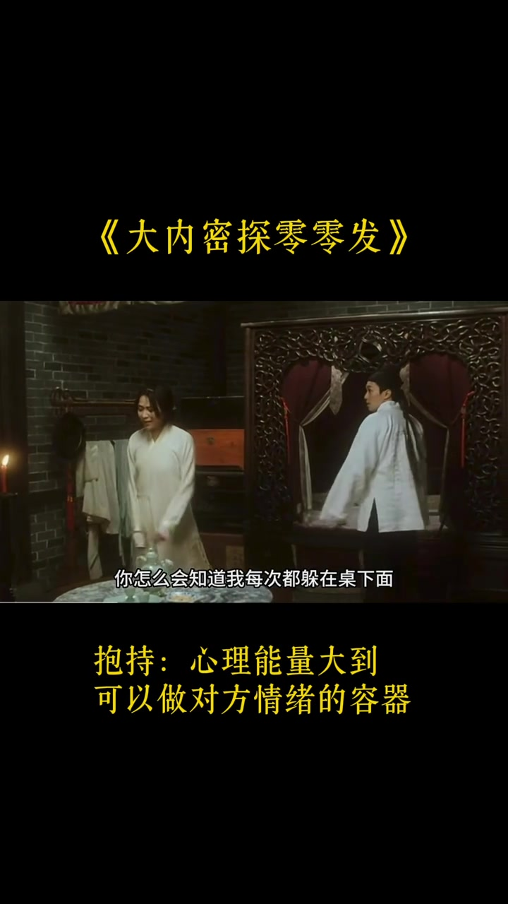
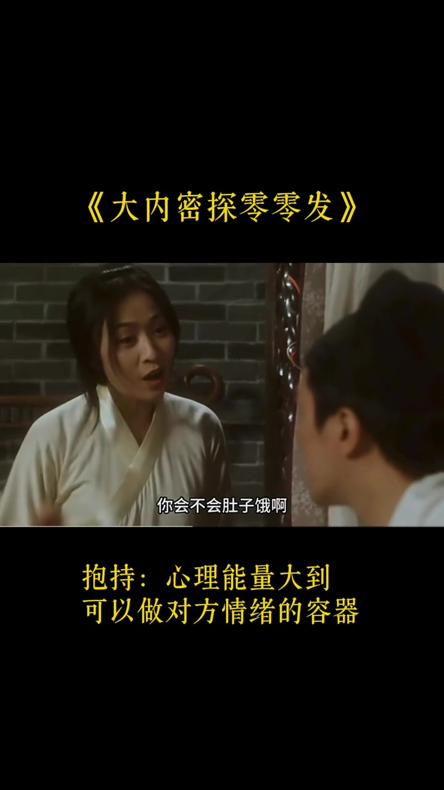
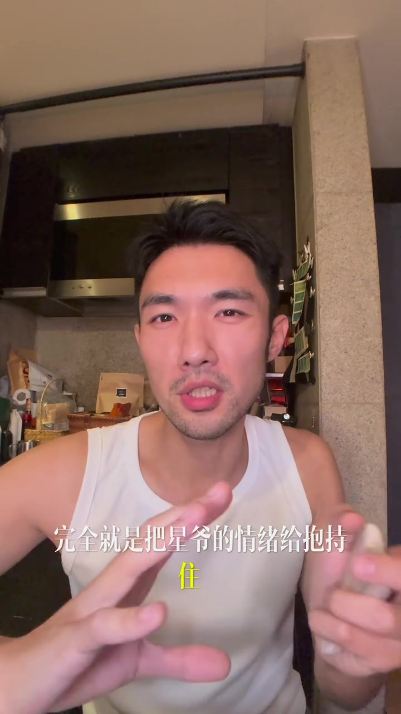
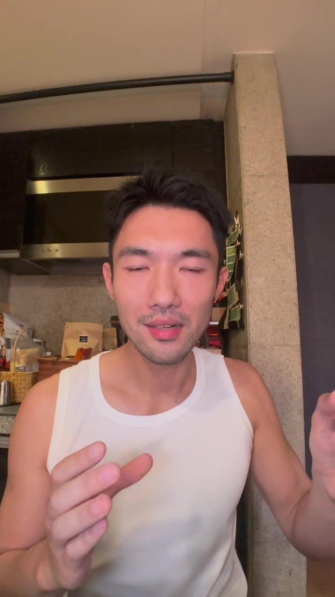

先给电影片段套上一个关键词
视频从一张近景口播开始。讲述者没有先介绍剧情，而是直接说周星驰的电影里藏着一种心理咨询技术：“抱持”。在他的定义里，它意味着一个人的心理能量足以承接对方的情绪，并且具有很强的“治愈力”。
“人一旦被抱持，那种治愈力是极强的。” — 00:10
这是讲述者对概念和效果的概括；视频没有给出研究资料或临床定义。接下来的电影片段，是他用来说明这个观点的例子。


争执并没有立刻被温柔化解
片中两人面对面争吵。男方承认，因为彼此熟悉，自己把对方当成了“出气筒”；女方先用“走啊”回应，并没有马上安抚。情绪仍然在场，双方也没有假装一切都好。

随后镜头把争执带进两人熟悉的日常细节：女方知道男方总躲在桌下，还嫌他每次藏在同一个地方。男方的回答却把责备拐成了依赖——如果不躲在那里，他怕对方找不到自己。
“可是我不躲在桌下面，我怕你找不到我嘛。” — 01:01

她先说清承受限度，再问他饿不饿
电影片段没有把承接情绪写成无限忍耐。女方告诉男方，自己也只是“血肉之躯”，反复挨骂可能有一天会忍不下去。男方说去洗澡，她还在坚持让他走；但就在冲突似乎要收场时，她又问了一句：“你会不会肚子饿？我下碗面给你吃。”
“我只是一个血肉之躯……我不知道哪一天会忍不下去。” — 01:12
“你会不会肚子饿？我下碗面给你吃。” — 01:21

镜头切回口播：把这一幕称作“抱持”
讲述者回到镜头前，把妻子的反应解释为承接住了周星驰所饰角色的情绪。他随后把视线转到现实关系：两个人都缺少被爱的经验时，争吵很容易让双方同时崩溃，因而很难有余力承接对方。

接着，他把同一能力延伸到三种身份：伴侣、领导和父母。会“抱持”的人，被他分别称作好伴侣、好领导和好父母。
“最好”是视频中的价值判断，不是由片段直接证明的事实。视频也承认这种状态“挺费劲”，需要当事人先有足够的自我调节能力。
最后的落点不是改变别人，而是先接住自己
结尾给出的练习顺序很具体：先学着“抱自己”。当情绪刚要崩溃时，尝试像安慰孩子一样对自己说一句“小事”，给情绪一次缓冲，而不是立刻被它推着走。
“在生活中，我们就先学抱自己。” — 02:12

视频以一句轻松的自我期许结束：从现在开始练习，做一个“抱持达人”。片尾的口号有一处 Whisper 识别不清，但落点仍很明确——大事先稳住，小事先抱一下。